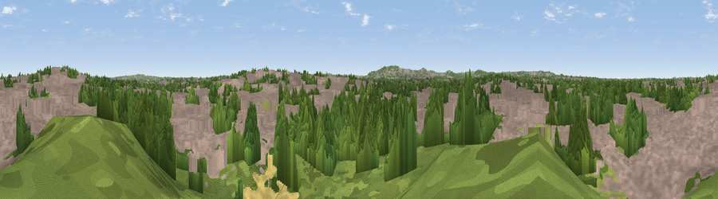

Viewpoint near Wednesbury
#44361 in England · top 92% of its area beats it · near WednesburyThe view, rendered

A 360° render of this exact spot computed from the terrain model, tree cover and land cover — summer colours, afternoon light, calibrated against photographs of famous viewpoints. Real trees, hedges and buildings will differ in detail.
The panorama
Grey silhouette: terrain skyline in each direction (720 bearings, Earth curvature and refraction included). Dashed green: skyline with trees (+15 m) and buildings (+8 m) as obstacles. Blue strip: how far the ground is visible on each bearing.
Where the view opens
Wedge length = distance to the farthest visible ground on that bearing (vegetation-aware). Rings at 10, 25 and 50 km.
What fills the view
58% built-up · 34% woodland · 5% grassland · 2% cropland
Angular shares of the visible panorama (visual magnitude), not map area. Landscape diversity 0.41 (0–1 Shannon).
Key numbers
More beautiful places nearby
The staircase of upgrades: each row has a higher view potential than everything closer. Driving times are estimates from straight-line distance, calibrated against real road routing — check an actual route before setting out.
| Place | Direction | Drive | Score |
|---|---|---|---|
| Viewpoint near Wednesbury | NNE · 1 km | ~3 min | 28.7 |
| Viewpoint near Oakham | SSW · 5 km | ~11 min | 68.3 |
| Viewpoint near Oakham | SSW · 6 km | ~13 min | 68.8 |
| Viewpoint near Streetly | ENE · 9 km | ~17 min | 69.5 |
| Viewpoint near Clent | SSW · 14 km | ~26 min | 73.8 |
| Viewpoint near Clent | SSW · 15 km | ~27 min | 74.3 |
| Knowle Hill | WSW · 31 km | ~49 min | 75.5 |
| Viewpoint near Abberley | SW · 35 km | ~53 min | 77.5 |
52.54632, -2.02761 · source: screening · position refined by local search. Computed location — check access rights before visiting.